Because the journey is the point.
Sweet Tarmac listens to the road while you drive, paints every road from smooth to rough, and then does what no navigator does: it plans a loop that starts and ends exactly where you are, over the best roads you know, so you can just drive.
An Android app, in six languages, now in closed testing. Your recordings stay on your phone unless you choose otherwise.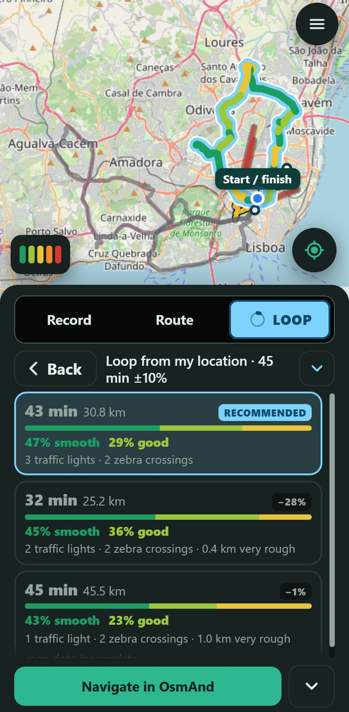
Your car is freedom.
You don’t want to get somewhere. You want to drive: go through the gears, flow through the corners, feel a machine you admire do what it was made for. The destination is just the place you come back to.
What gets in the way is never the car. It is the bump you didn’t see, the pothole at the apex, the manhole cover in the middle of the best bend, the broken asphalt, the cobbles, the fourth traffic light in a row that kills the flow.
So we count them. Every drive anyone records makes the map better, and the people who love the same thing get the roads worth driving.
What “a nice drive” is made of
Sweet Tarmac measures the first five, counts the next two, and builds the last two into the route.
The Loop: “take me for a drive, and bring me back.”
Every other app takes you from A to B by the fastest road. The Loop has no B. You say how long (or how far) you want to drive, and it draws a round trip that begins and ends at the exact spot where you are, on the smoothest roads you have recorded.
The problem it solves
A drive is made or ruined by what the road is like. Maps tell you where roads go. They don’t tell you which one is smooth, which one has a pothole in the best corner, or how many lights you’ll sit at. And driving the same three roads because you know them is no answer either.
The Loop is the answer. It uses what you and other drivers recorded, picks roads that are known and smooth, keeps the time or distance you asked for, and steers round the things that spoil a drive. Then it hands the route to your navigator and you go.
Known, smooth roads first
At least 95% of a loop is on roads that have been driven and measured, the more the better. No surprises.
Back to the same spot
It always starts where you are and ends exactly there, even if the best answer is to drive a good road out and back.
Fewer lights, no bumps
Tell it what to avoid: traffic lights, zebra crossings, tolls, speed bumps, holes and manhole covers. It routes round them when it can.
How a loop is chosen, in this order
- 95 to 100% known roadThe more, the better. Roads you have driven and measured, in either direction.
- The smoothness you asked forA slider decides how much the feel of the road matters.
- The time or distance you choseFrom 10 minutes to 2 hours, or up to 200 km (125 miles), within a tolerance you set.
- As few of the things you avoid as possibleLights, zebra crossings, tolls, bumps, holes and manholes.
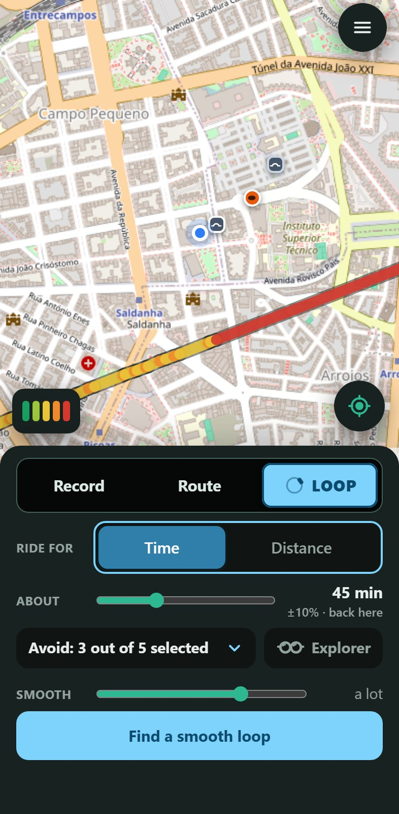
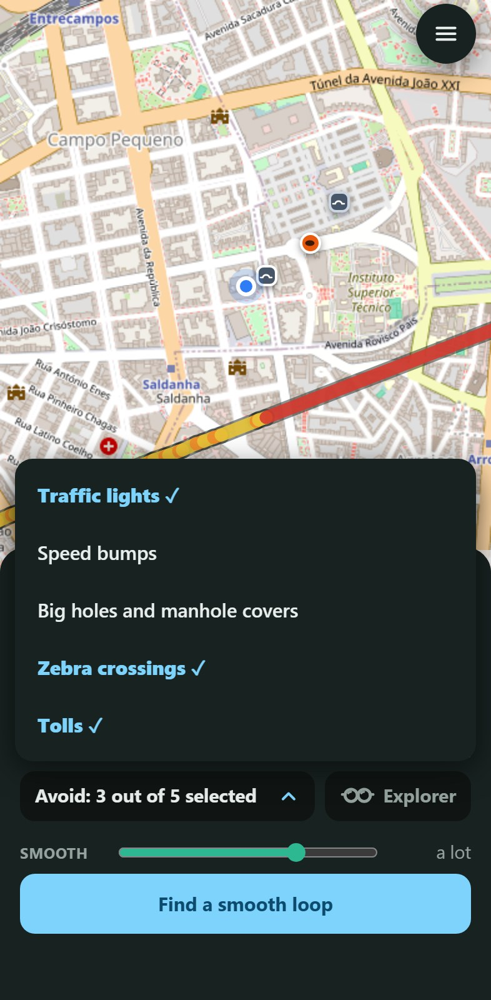
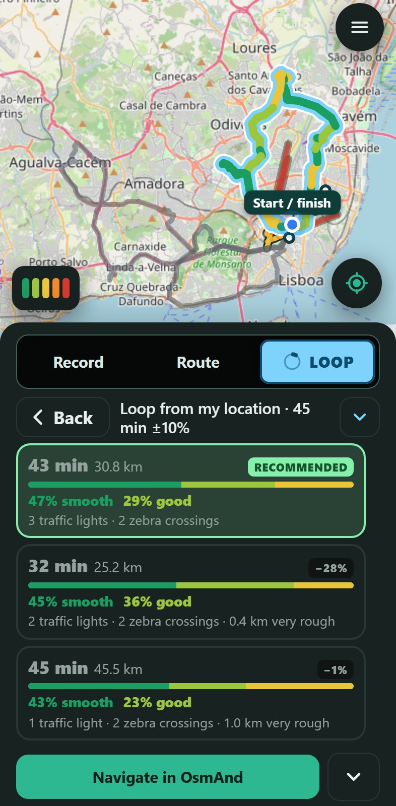
Want something new? Switch on Explorer.
The normal Loop sticks to roads that are known and smooth. Explorer does the opposite: it draws a loop over roads you have not recorded yet, for the time or distance you chose, so you can discover new ones and fill the map. Everything turns green so you always know which mode you are in.
Then drive it with recording on, and the next loop gets better for everyone.
How it works
Your phone is the instrument. Mount it firmly, press record and drive the way you always do.
1. Mount and record
Any firm mount, any orientation. It works out “up” by itself and records from 5 km/h.
2. It feels the road
Every second of road becomes a smoothness score, tuned to your car’s suspension.
3. Your roads in colour
The map shows what you have driven, by direction, and the bumps and holes in it.
4. Plan, drive, enjoy
Pick a Loop or a route, send it to your navigator, and the app can record that drive too.
The smoothness scale
Five levels on a scale from 0 to 5, the same on the map, the live panel and the route cards. The scale adapts to your car: a stiff classic and a soft saloon both call the same road smooth.
Everything a driver wants to know about the road
A quick tour. The detailed list has every feature with screenshots, and the complete guide (PDF) explains how it all works.
📈Live smoothness
While you drive, a panel shows the level of the road right now, your speed and a 60-second chart, in colour you can read at a glance.
🕳️Bumps, holes and manholes
Mark a speed bump or a hole with two gold buttons: it shows in gold on your map and in the colour key, goes to the server with your drive, and warns the next driver. Nothing is marked behind your back.
🚗Tuned to your car
Up to twelve cars, each with its own suspension setting from Very soft to Rock hard, calibrated with a guided set-up and re-colouring all your old drives instantly.
🧭Smooth routes, A to B
Several alternatives are compared against everything recorded, with time, distance, smooth share, bumps and holes on each card.
🛟Careful by design
Recording pauses if the phone is knocked out of its mount, ignores the phone’s own buzzing, skips low speeds and ends a forgotten trip by itself.
🔒Yours first
Everything is stored on your phone. Online mode is optional, anonymous, trimmed at both ends of every trip, and deletable at any time.
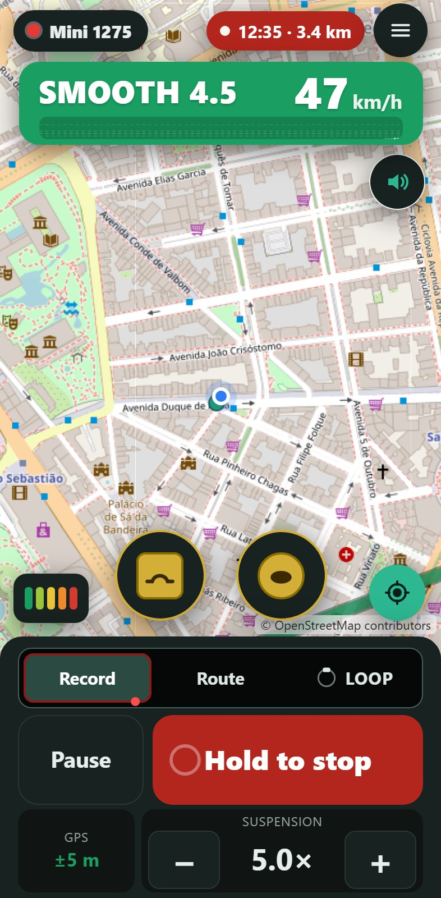
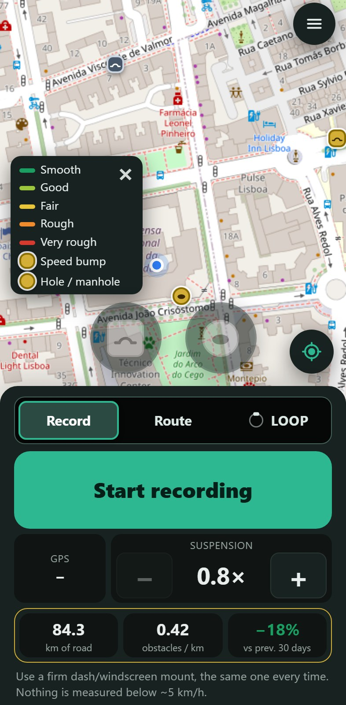
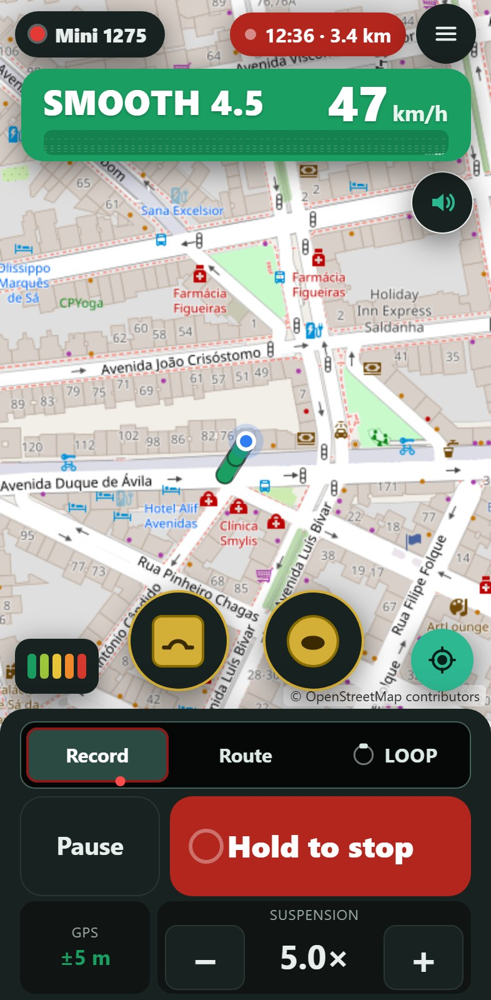
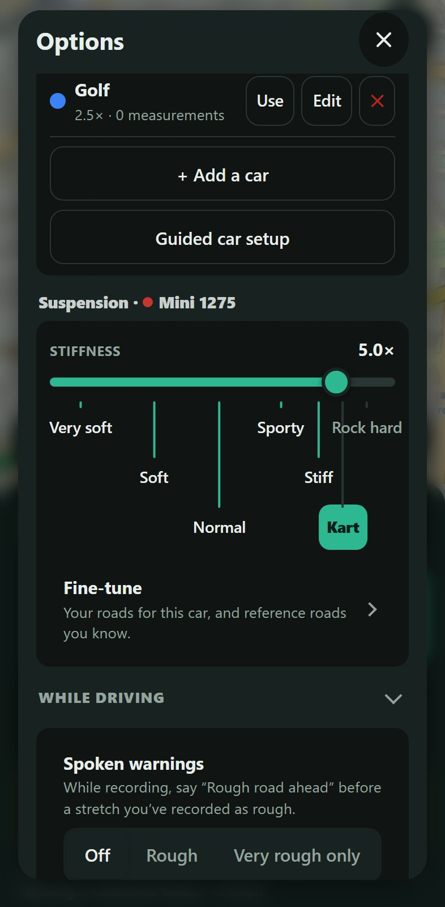
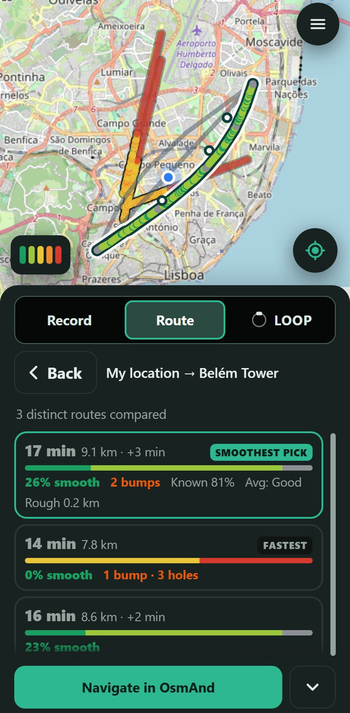
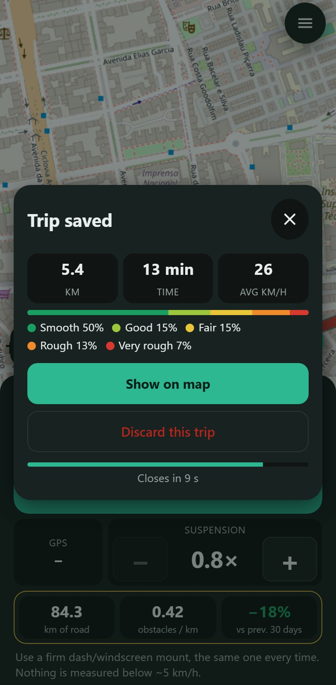
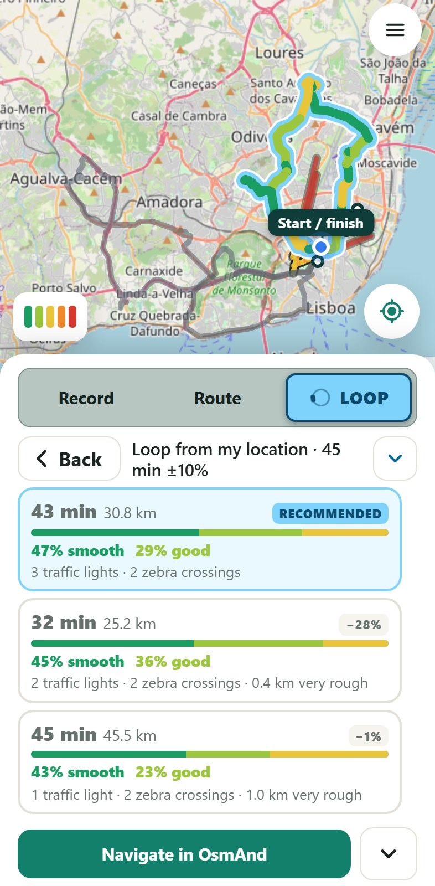
New: be the explorer of real roads
Sweet Tarmac is about streets and roads, not motorways. So the new ranking rewards the ones who record the roads nobody has recorded yet.
🏆 Explorers ranking
Choose a nickname and see the biggest explorers: the length of road each driver was the first to record, with medals for the top three.
The golden steering wheel (animated and sparkly) goes to whoever found the most new smooth and good road in the last 30 days, as long as their car is properly calibrated.
Highways and freeways do not count: they are almost all smooth, and we do not want to promote them. You can still record them.
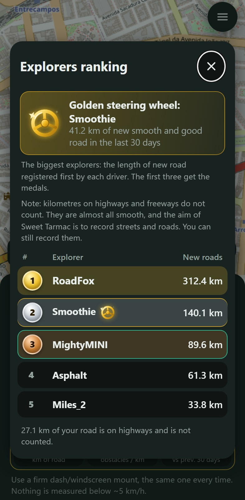
💾One backup of everything
Recordings, trips, your gold marks, cars and their calibration, every setting, your nickname and your place in the ranking: one file. Restore it on a new phone or after a reinstall and all is back as it was.
🙂No account, just a nickname
No e-mail, no Google sign-in. The app makes its own id and asks for a nickname. During the closed test, an access password from the owner lets you in.
🧭Exact route in your navigator
Open the route you chose as a track in OsmAnd or Organic Maps, so they follow it turn by turn, or hand Google Maps up to nine stops that keep it on your roads.
🗂️Options in the order you think
My cars, While driving, Map & roads, Routes, Community, App & language, My data: with a search box and a one-line status on the sections that need it.
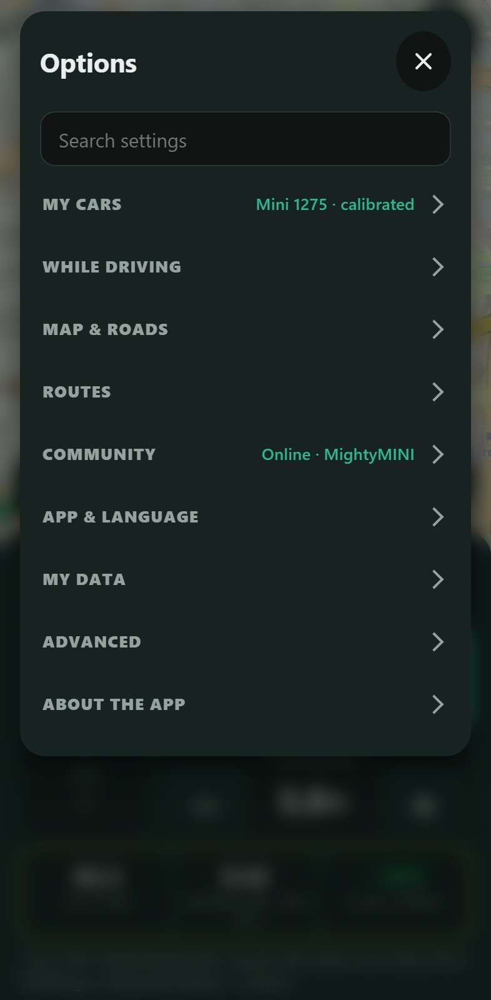
Drivers helping drivers
You drive for yourself. If you want, what you record also helps others find the roads worth driving, and theirs help you.
Good data in, good roads out
Readings that are far from what other drivers recorded on the same road are put in quarantine and kept out of the averages, so one badly calibrated phone cannot spoil the map. If you drive several cars, the app even warns you when one of them reads differently from the others.
Your marks are the only ones
Only the speed bumps and holes that drivers mark themselves, in gold, are shared: nothing is detected and sent behind anyone’s back. You can switch other sources off and use only yours.
Sweet tarmac?
Six languages (English, Português, Español, Français, Deutsch, Italiano), km or miles, light and dark, colour-blind-friendly colours. In closed testing now, coming to Google Play.
See what it can do Read the complete guide (PDF)
Questions: support@sweettarmac.com